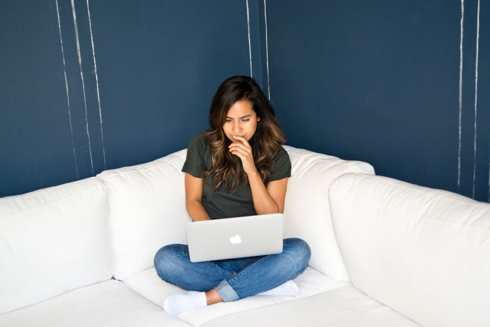

<body>
  <div class = "main-thumb">
    </a>
  </div>
</body>
<div class="g-row docs-ga-grid-example">
  <div class="g-column small-2 medium-4 large-1"><span>Next Steps</span></div>
  <div class="g-column small-2 medium-4 large-1"><span>Career Resources</span></div>
  <div class="g-column small-2 medium-4 large-1"><span>Let's Meet</span></div>
</div>


  <p class="rss-subscribe">subscribe <a href="{{ "/feed.xml" | prepend: site.baseurl }}">via RSS</a></p>

</div>
